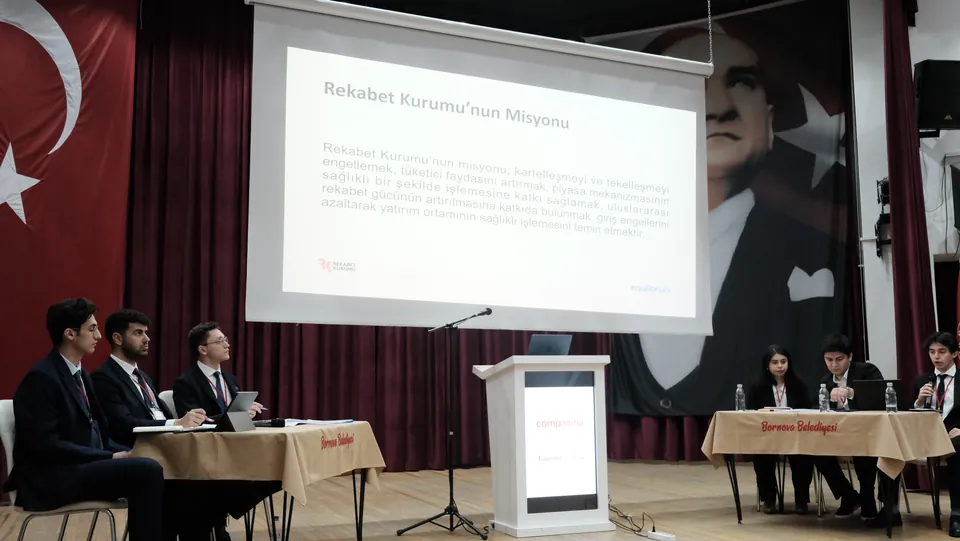
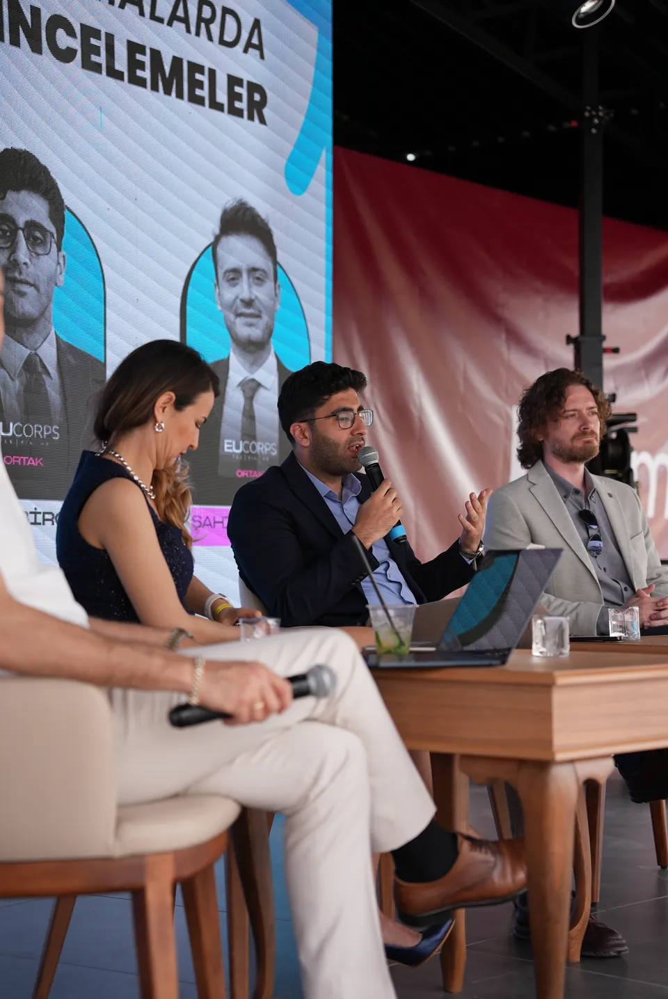
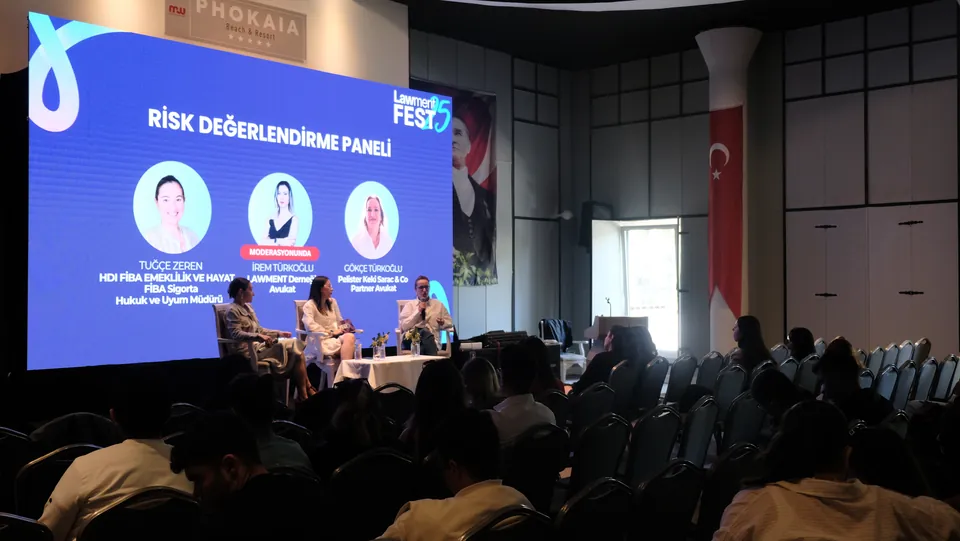
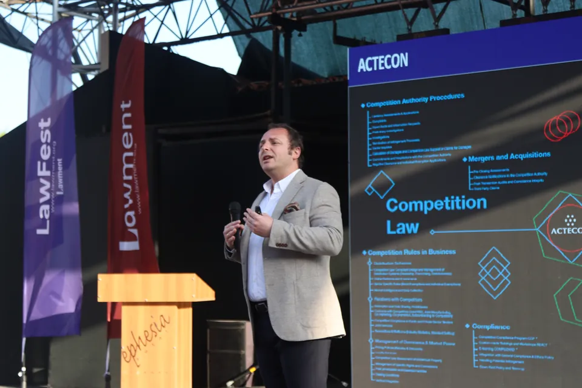
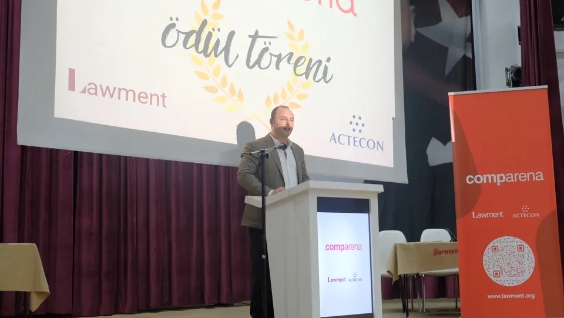

İzmir'den Türkiye'ye
Lawment; hukuk öğrencilerini, genç hukukçuları, akademisyenleri ve sektörün öncü isimlerini aynı masada buluşturan gönüllü bir dernek. Paneller, yarışmalar ve festivallerle hukuku amfinin dışına taşıyoruz.
- 2023 · İzmir'de kuruldu
- 5 departman
- Dernek kütük no 35-085-124


50+ şirket ve hukuk bürosu etkinliklerimizde yer aldı
Kurumlar için- Congar Law
01 / Misyonumuz
Genç hukukçular arasında düşünsel gelişimi desteklemek, hukuk eğitimine yenilikçi katkılar sunmak ve toplumsal faydayı önceleyen projelerle daha adil, erişilebilir ve çağın ihtiyaçlarına duyarlı bir hukuk kültürüne katkıda bulunmak.
02 / Hikâyemiz
Bugünden 2023'e, yıl yıl.
Her yıl daha fazla katılımcı, daha fazla kurum. Yıllar kendiliğinden ilerler; durdurabilir ya da istediğin yıla geçebilirsin.
-

Panel, yarışma, ilk dergi.
[katılımcı sayısı]Enerji hukuku ve rekabet hukuku panelleri ile “Avukatlığa Bakış” oturumu. Yıl içinde Comparena, Back in Lawment ve Lawment Insights'ın ilk sayısı.
Arşivde: 2026 -

Dokuz panel, bir salon.
265genç hukukçuTahkimden deniz hukukuna, birleşme ve devralmadan dava avukatlığına uzanan dokuz panel yapıldı. ACTECON ve Mare Legal & Consultancy platin sponsor oldu; o güne kadarki en kalabalık etkinliğimiz.
Arşivde: 2025 -

Etkinlik, festivale dönüştü.
180genç hukukçuPaneller, atölyeler ve sosyal programla büyüdü. Kale Group, EDAC, MSC ve QNB Finansbank etkinlikte yer aldı; yıl içinde Back in Lawment düzenlendi.
Arşivde: 2024 -
Yeni Yüzyılın Hukuku
100hukukçuİki gün, bir gece. Cumhuriyet'in 100. yılında düzenlenen ilk buluşmada MSC, Baker McKenzie ve Congar Law yer aldı.
Arşivde: 2023
03 / Projelerimiz
Hukuku yaşatan üç proje.
Lawment Fest, Comparena ve Back in Lawment: derneğin her yıl yeniden kurduğu üç düzenli proje. Üçünün de amacı genç hukukçuları sektörle aynı masada buluşturmak.


04 / Faaliyetlerimizden kareler
Salonda, kürsüde, masada.
Lawment Fest'26 · Enerji Hukuku paneli Comparena · Sözlü savunma Lawment Fest'25 · Risk Değerlendirme Paneli 
Comparena · Ödül töreni Lawfest'24 · Rekabet hukuku sunumu 
Back in Lawment · Sohbet Lawment Fest'26 · Panel 
Comparena · Ödüller
05 / Yıl boyunca
Üç projenin yanında
İki ayda bir Lawment Inspired buluşmaları ve dergimiz Lawment Insights.
Cumhuriyetimizin 100. yılında umutlarımın hayat bulmuş hali olarak gelecekteki yüz meslektaşımı görmek müthişti, dolu dolu geliyorlar. İyi ki varsınız.
06 / Katılım
Lawment'e üç yoldan katılabilirsin.
Öğrenci ya da genç hukukçuysan
Etkinliklere katıl, ekibe gir.
Festivallere, yarışmalara ve buluşmalara katıl. İstersen beş departmandan birinde gönüllü ol, etkinlikleri birlikte kuralım.
Katılım yollarıKurum ya da hukuk bürosuysanız
Geleceğin hukukçularıyla tanışın.
Sponsorluk, panel ortaklığı ya da yarışma desteğiyle Türkiye'nin dört bir yanından gelen genç hukukçulara doğrudan ulaşın.
İş birliği seçenekleriDestek olmak istiyorsan
Bağış yap.
Bağışın, bir gencin kendini ifade etmesine ve nitelikli hukuk etkinliklerinin İzmir'den tüm Türkiye'ye yayılmasına katkı sağlar.
Destek olDuyurular
Bir sonraki etkinliği kaçırma.
Etkinliklerden ilk sen haberdar olmak için Instagram'da bizi takip et ya da doğrudan ekibe katıl.